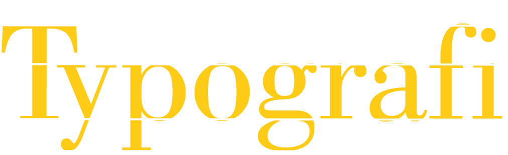

Photoshop
Photoshop er et billedbehandlingsprogram fra softwareproducenten Adobe. Med Photoshop kan man næsten gøre alt med billeder, det er kun fantasien som sætter grænser. Stort set alle billeder i hjemmesider, plakater, magasiner og brochure, som man ser i hverdagene, er helt sikkert blevet manipuleret på en eller anden måde med Photoshop.

Illustrator
Illustrator er et rigtig godt værktøj til både tegning, tekst og typografi. Illustrators er et rigtig godt program til at bruge hvis man skal lave vektor grafik, det vil sige at man kan skaleres logo eller tekst til en større eller mindre størrelse uden at tabe kvalitet i logoet.

Farver
Farver spiller en kæmpe rolle, det er med til at bestemme nogle bestemt udtryk/følelser i fx logoer, fotografering og hjemmeside. Farverne bruges som et virkemiddel, det kan forstærke nogle elementer op, og det samme kan mangel på farver ved brug af sort og hvid.
Komplementærfarver
Hvis man vil have en balance i det man laver, er det god ide at bruge komplementærfarver. Komplementærfarver er farver, der er modsætninger til hinanden, som man kan se på farvecirklen. På den måde træder det grafiske bedre frem og bliver mere synlig og samtidig er der harmoni mellem farverne. Farvecirklen er 3 forskellige dele som er:
- Primære farver: Gul, rød, blå. Dette er farverne i midten af cirklen. Alle de andre farver stammer fra- og er en blanding af dem.
- Sekundære farver Grøn, orange, lilla. Dette er farverne i den mellemste del af cirklen.
- Tertiære farver er de yderste farver i ringen af cirklen. Disse farver er skabt ved at kombinere de sekundære farver.

Fotografering
Blænde, lukketid og ISO udgør de tre sider af eksponeringstrekanten. Sammen fremstiller de det gode eksponeringsbillede. Hvis en af parametre blive ændrer i, skal mindst en af de andre også ændres for at bibeholde en god eksponering.
- Blænde: Blænde handler om hvor høj dybdeskarphed kameraet har, det forgår ved at Blænde bestemmer hvor meget lys må komme igennem linsen, Jo større hul er, jo mere lys når sensoren.
- Lukkertid: Lukkerhastighed er, hvor lang tid lyset får lov til at ramme sensoren. Det vil sige jo længere lukketid, jo lysere bliver billedet, men samtidig kan man risikere mere bevægelsesslørring og rystelser.
- ISO: ISO bestemmer følsomheden på ens sensors. Jo højere ISO-værdi betyder, at der vil være mere støj fra sensoren, det betyder også at sensoren ikke behøver at samle så meget lys for at udføre en korrekt eksponering og omvendt jo lave ISO-værdier betyder, at sensoren bliver nødt til at samle mere lys for at gøre en god eksponeringen.
Typograf
Typografi har en stor indflydelse på hvordan mennesker modtager teksten og hvad den repræsenterer. Der findes forskellige slags fonte nogle er kursive eller fede, et bogstav kan have tykke stammer og nogle kan have tynde. Nogle har seriffer og nogen har ikke. Her er de 5 familier indenfor typografi.
- Antikva (serif): har seriffer, som gør, at fonten er nemme at læse på trykte medier som eks. en annonce/bog.
- Grotesk (sans-serif): har ikke seriffer. Fonten er meget læsevenlige på skærmen og trykte medier (dog kun hvis det er kort tekst).
- Dekorative (håndskrift): Er håndskrift. Det er ikke altid læsevenlige. De kan dog se godt ud at bruge den indenfor et logo design.
- Fantasy: Er et design font og opfattes tit barnligt. Ligesom den Dekorative font bruges fanatasy kun indenfor et logo design.
- Monospace: Monospace fonten kendes på at alle bogstaver har samme bredde både deres grundstrege og seriffer. I en længere tekst kan være svære at læse den.

Gestaltlove
I gestaltpsykologien er der opstillet en række love (gestaltlovene). Gestaltlovene handler om menneskets måde at grupperer former og figurer, og derefter skabe et helhedsbillede. Her er nogle af de grundlæggende principper indenfor gestaltlovene.
- Proximity: Figurer der er placeret tæt på hinanden ses som en gruppe.
- Similaritys: Ens figurer som i farver, retning eller størrelse opfattes som en gruppe.
- Continuity: Figur der er arrangeret på linje, eller kurver opfattes som en gruppe
- Figure-Ground: handler om kontrasten imellem to farver som der er med til skabe et billede.
- Common Fate: Figur der bevæger sig i samme retning, bliver opfattet som en gruppe.
- Rule of Thirds: Er en grundlinje for hvordan et menneske øje bedst kan lige at se i et designet (balanceret)
- Closure: Er en ikke komplet figur af noget, vi alle kender til, hjernen udfylder hullerne og derved bliver figuren opfattet som et helt billede.
- White Space: ligger tom luft omkring ens figur/elementer og er med til at øger læsbarheden. Det kan være med til at adskille og knytte figur sammen.
Refleksion
Farver og typografi har jeg leget en del med før i min skiltetekniker uddannelse så det har være fedt og blive påmindet omkring det igen, det samme gælder for Photoshop og Illustrator, dog Illustrator skal jeg lige vænne mig til, blev oplært i et andet program som fungere helt anderledes. Jeg har virkelig fået øje for hvor svær fotografering engerlig er, på dette forløb og derfor glæder jeg mig til at lege med det endnu mere i fremtiden.
Kilder:
Photoshop: Photoshop CC 2019 Essential Training (film) og Photoshop: grundlæggende - Carsten Kjeldsen Bogner
Illustrator: Illustrator CC 2019 One on One Fundamentals og Illustrator: grundlæggende - Carsten Kjeldsen Bogner
Farver: Interfacedesign Kap 15 og 17, https://videnskab.dk/sporg-videnskaben/hvordan-pavirker-farver-os og https://designmodo.com/color-psychology-web-design/
Fotografering: Photography for Graphic Designers (film) og Fotografering: grundlæggende - Niels Østergaard
Typograf: Interfacedesign Kap 16, https://www.webfx.com/blog/web-design/the-basics-of-typography/ og http://typeburrito.com/2016/03/18/stop-feeling-dumb-about-pairing-fonts.html
Gestaltlove: http://www.andyrutledge.com/gestalt-principles-1-figure-ground-relationship.html, https://www.andyrutledge.com/gestalt-principles-2-similarity.html, https://www.andyrutledge.com/gestalt-principles-3.html, https://www.andyrutledge.com/common-fate.html og https://www.andyrutledge.com/closure.html